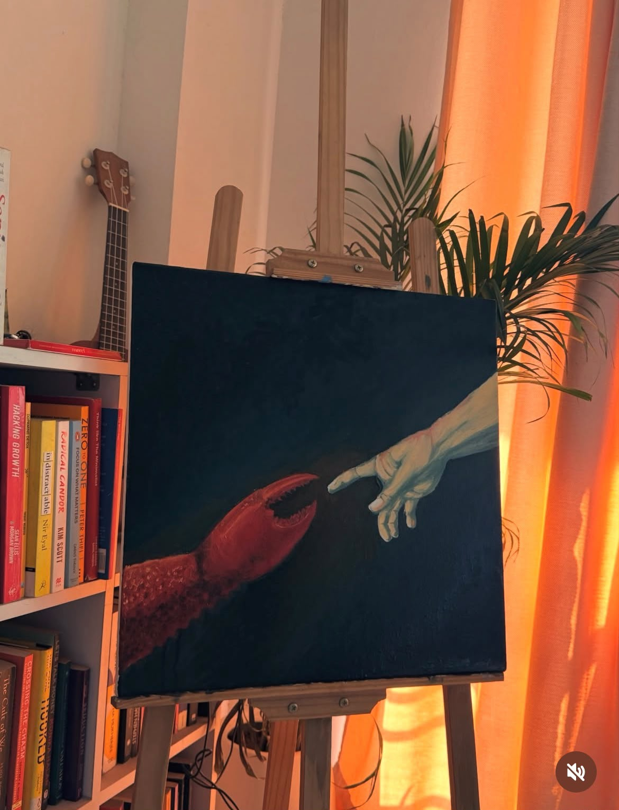
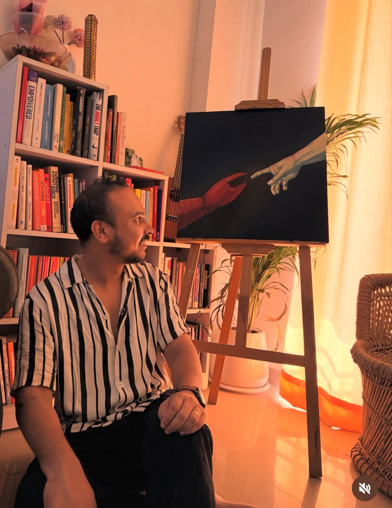

the reach
oil on canvas. a claw reaching for a hand — michelangelo, borrowed. the gap is the whole painting.
drawings · ink, mostly
it's the part of the practice with no audience and no outcome — which may be exactly why it's the part that teaches the most.
01
why i keep doing it
you cannot draw a thing you haven't actually looked at. the pen finds out immediately. that's uncomfortable, and it's the whole value.
most of these take a few minutes. most of them are wrong. i keep them anyway, because the wrong ones are where the looking happened — the finished ones are just the receipt.
none of it is for sale. some of it ends up in the letters, and some of it quietly becomes the visual language of everything else here.
02
the sketchbook

oil on canvas. a claw reaching for a hand — michelangelo, borrowed. the gap is the whole painting.

where most of them happen. late, badly lit, and always longer than planned.
hills, mostly imaginary. an excuse to draw one long line.
trying to say the whole thing without lifting the pen.
a cup, a stone, a lamp. things that hold still and don't argue.
no subject at all. just seeing what the brush wants to do.
the last four are stand-ins. real work replaces them as the sketchbooks fill.
the drawings aren't the work. they're the evidence that i was paying attention that day.
— prashik